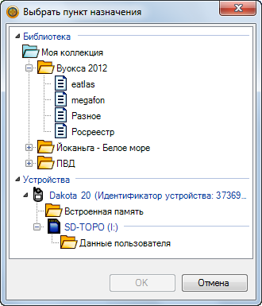

Андрей Коперский — фотографии походов
Фотографии походов, приглашаю в поход
Page Tools
Лучший способ: BaseCamp + SAS.Планета
Вы читаете последний из написанных разделов о растровых картах для Dakota (сентябрь 2012). И так получается, что описываемая связка BaseCamp + SAS.Планета делает малоинтересными прочие способы подготовки и загрузки растровых карт в навигатор.
Вопрос – ответ
В: — Где скачать BaseCamp?
О: Бесплатно на сайте Garmin по этой ссылке.
В: — Для чего SAS.Планета?
О: Чтобы бесплатно загружать все мыслимые спутниковые снимки, листы генштаба, атласы и сохранять их в формате kmz. Программу можно бесплатно скачать с сайта sasgis.ru.
В: — Не слышал про kmz... что это?
О: Это файл с расширением .kmz, а имя может быть любое, например vuoksa.kmz. Вообще это просто архив, который можно распаковать архиватором zip или 7-zip.
В: — И что?
О: Внутри kmz находится растровая карта для Дакоты, например космоснимок, лист генштаба или атласа. Запишешь kmz на MicroSD, и можно просматривать карту на экране навигатора и ориентироваться по ней.
В: — Для чего нужен BaseCamp, если SAS.Планета делает kmz?
О: Для Дакоты не всегда подходит этот kmz. Зато если открыть его в BaseCamp, можно измерять расстояния на карте, рисовать треки, ставить маршрутные точки, а затем одним движением отправить все это вместе с картой в навигатор.
Еще с помощью BaseCamp можно просматривать векторную карту "Дороги России. Топо" (поставляется на MicroSD).
Как создать kmz
Об этом написано в разделе SAS.Планета.
Как импортировать kmz в BaseCamp
В BaseCamp объекты пользователя разложены в папки и списки. Этот способ упорядочивания показан на рисунке.
-
Создайте новый список или отметьте существующий.
На рисунке отмечен список «genshtab». Его содержимое показано в нижней панели.
- Нажмите Ctrl+I.
- В диалоге выберите импортируемый kmz.
Как отправить растровую карту в навигатор
-
Подключите навигатор к компьютеру и убедитесь, что он виден в BaseCamp.
 Если навигатор не виден, попробуйте подключить его следующим образом. Выньте батарейки. Нажмите и удерживайте кнопку включения. Подсоедините кабель USB, не отпуская кнопку включения. Держите нажатой кнопку полминуты или пока не будет установлен драйвер и навигатор не появится в списке устройств.
Если навигатор не виден, попробуйте подключить его следующим образом. Выньте батарейки. Нажмите и удерживайте кнопку включения. Подсоедините кабель USB, не отпуская кнопку включения. Держите нажатой кнопку полминуты или пока не будет установлен драйвер и навигатор не появится в списке устройств. - Отметьте список объектов, в котором расположена растровая карта.
- Нажмите правой кнопкой мыши на имя импортированной карты.
-
Выберите пункт контекстного меню Отправить на...
Отображается список Выбрать пункт назначения.
 - В группе Устройства выберите «Встроенная память» или «Данные пользователя» и нажмите OK.